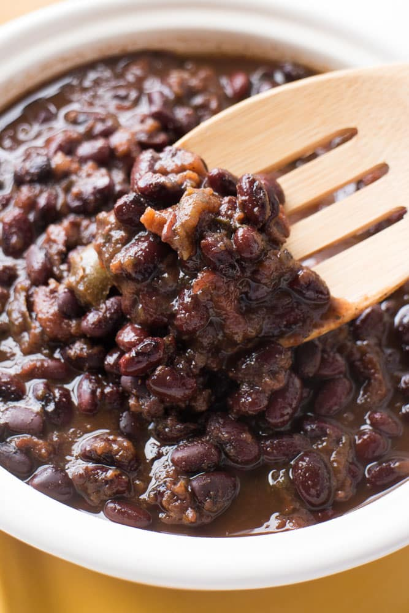

Fastest Taco Beans

This is probably the quickest and most minimal black bean recipe, but still tastes great!
Ingredients:
- 1 can (15oz) Black Beans
- 1/4 cup Water
- 1/2 tbsp Tomato Paste
- 1/2 tsp Chili Powder
- 1/4 tsp Ground Cumin
- 1/4 tsp Salt
Instructions:
- Add all ingredients to a pan and stir to combine
- Turn on stovetop to medium heat
- Continue stirring beans to cook evenly
- Liquid should mostly cook off; remove from heat as beans dry
- Enjoy!